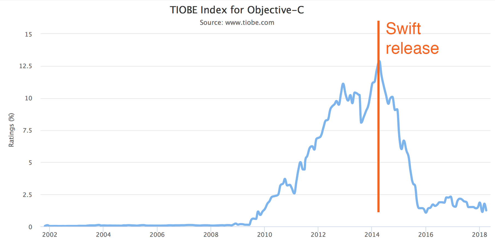

Swift - это фантастический способ писать приложения для телефонов, для десктопных компьютеров, серверов, да и
чего-либо еще, что запускает и работает при помощи кода. Swift - безопасный, быстрый и интерактивный язык
программирования. Swift вобрал в себя лучшие идеи современных языков с мудростью инженерной культуры Apple.
Компилятор оптимизирован для производительности, а язык оптимизирован для разработки, без компромиссов с
одной или другой стороны.
Преимущества Swift
- Легкий.
Apple любит минимализм. Поэтому в Swift простой синтаксис, его легко читать и легко писать на нем. Swift
легко понимают разработчики, которые знают другие языки. Этот факт является определяющим при разработке
приложения на несколько платформ.
- Безопасный.
Ещё одна сильная сторона Swift, это его функциональная безопасность. Этот статически типизированный язык
позволяет программистам быстро находить ошибки еще до компиляции и устранять их. Более того, с помощью
указателя nil разработчики могут избавиться от ошибок компиляции, вызванных нулевыми ссылками (null).
- Имеет автоматическое управление памятью.
Автоматический подсчет ссылок следит и управляет памятью приложения самостоятельно. Теперь разработчикам
не надо тратить время, чтобы делать это самостоятельно. В результате сокращается время на создание
приложения.
- Имеет открытый исходный код.
В Swift появился открытый исходный код в 2015. Это событие сильно повлияло на популярность языка. В 2015
он стал любимым языком пользователей Github, а в 2016-м занял второе место.

Pис. 1 Этот график отражает статистику популярности Swift.
Недостатки языка Swift
- Ограниченный кадровый потенциал.
Swift новичок среди языков, в связи с этим талантливых разработчиков пока не так много. Но этот
недостаток легко превратить в достоинство тем, кто хочет стать Swift разработчиком. Потребность в них
только увеличивается, а конкуренция все еще не большая.
- Малое количество библиотек.
В Swift все еще довольно мало встроенных функций, которые бы работали одинаково хорошо во всех версиях.
Большинство библиотек и фреймворков разработаны для более ранних версий языка и совершенно бесполезны в
новых.
- Нестабильность.
Многие разработчики жалуются на одну и ту же проблему. Из-за изменений, представленных в новой версии
языка, Swift ведет себя очень нестабильно. Это значит, что если разработчик хочет перейти на новую
версию языка — ему нужно будет переписать код. Правда, эта проблема была частично решена с помощью Swift
Migration Tool в XCode, что сделало миграцию на 4-ю версию языка довольно простой задачей.